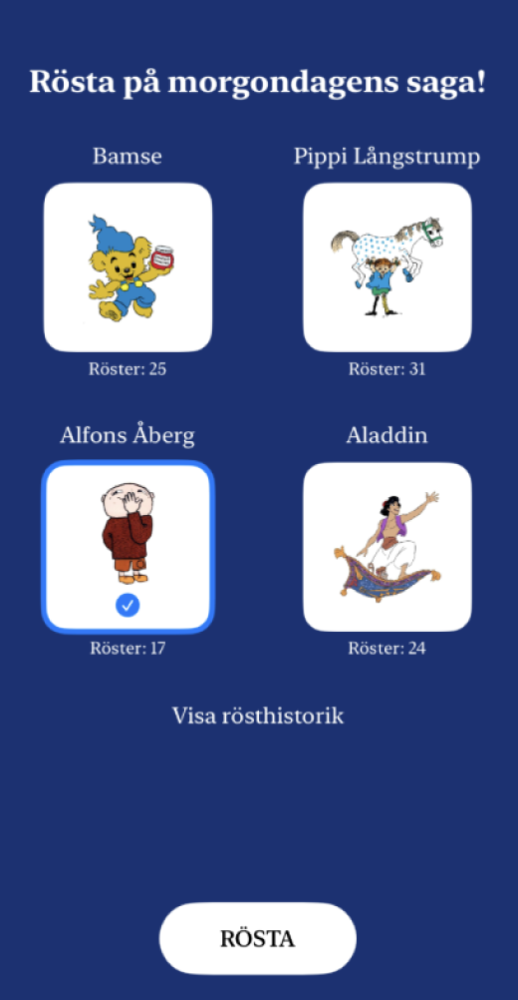
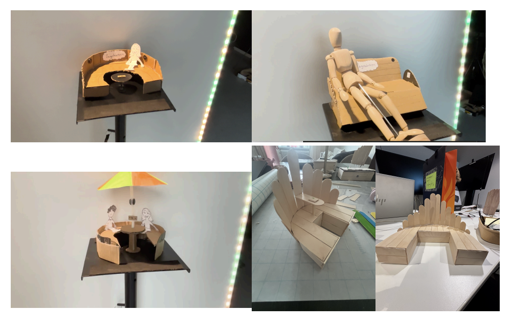
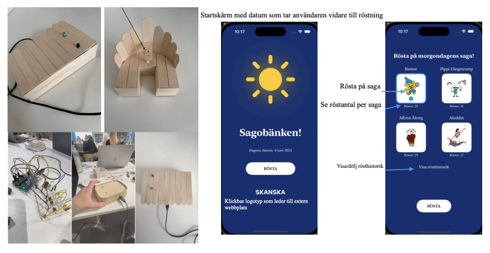

Sagobänken är en interaktiv bänk som spelar upp sagor och uppmuntrar till fantasi och social lek — framtagen för att göra lekplatser mer engagerande för barn.
Projektet började i kursen Användarstudier inom Interaktionsdesign där vi genomförde semi-strukturerade intervjuer och tematisk analys för att undersöka hur lekparker kan bli mer engagerande för barn.


Utifrån användarstudien växte konceptet Sagobänken fram — en interaktiv bänk som spelar upp sagor och uppmuntrar till fantasi och social lek.

I prototypingkursen utvecklade vi en fysisk prototyp tillsammans med en Arduino-baserad ljudkonsol och en SwiftUI-app.
Projektet lärde mig hur viktigt det är att låta användarens behov styra designbesluten.
Genom att arbeta med både fysisk och digital prototyp fick jag erfarenhet av att testa idéer i praktiken och upptäcka saker som inte alltid syns i en digital prototyp.
Framför allt lärde jag mig värdet av att testa, utvärdera och iterera för att utveckla en bättre lösning.